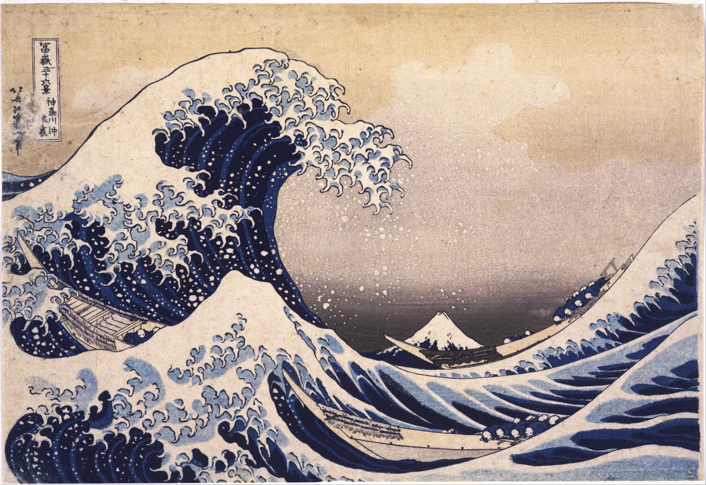

大波→舟→富士を、大・中・小として比べる。動く波と、動かない富士の対比を見る。
《神奈川沖浪裏》は大波の迫力が強すぎて、つい波だけを見て終わります。そこで一度、波・舟・富士を「大・中・小」の三つとして比べます。動くものと動かないものの差が見えると、画面の緊張感がぐっと分かりやすくなります。
1. 大波を一つの形として見る
細かな波しぶきより先に、画面左上から大きくかぶさる波全体のシルエットを見ます。
大きな弧だけで強い動きが生まれています。
大波は、海面の一部として見るより、画面を覆う巨大な弧として見ると迫力が分かります。左下から立ち上がり、上で折れ、右下へ落ちる流れを一筆書きのように追うと、波が画面全体の骨格になっていることが見えてきます。
さらに、波の内側には空の抜けがあり、その奥に富士が見えます。大きな波がただ前にあるだけでなく、遠景を囲む枠のようにも働いているところが、構図の面白さです。
2. 波頭は爪のような形の集まり
白い泡が細い爪のような形に分かれています。似た形の繰り返しが、巨大な波に細かなリズムを作ります。
波頭の白い泡は、現実の水を細密に写したというより、先端が伸びた爪のような形へ整理されています。似た形がいくつも連なり、これから舟へ覆いかぶさる直前の緊張を強めています。
一つの泡を見つけたら、少し離れた別の泡にも同じ形がないか探してみてください。自然の偶然に見える波が、反復する形によって画面上のリズムへ変えられていることに気づきます。
3. 舟と人の姿勢を見る
舟は波に沿うように斜めへ置かれ、人々は身体を低く伏せています。
人の大きさと姿勢が、波を人間より圧倒的な力として感じさせます。
舟は細長く、波とほぼ同じ方向へ傾いています。もし舟が水平なら画面はもっと安定して見えるはずですが、斜めに置くことで人間側まで海の動きに巻き込まれています。
舟の中の人々は身体を低くしており、顔の表情を描かなくても状況の厳しさが伝わります。人の小ささ、舟の細さ、波の大きさを順番に比べると、自然の力が具体的な尺度として感じられます。
4. 富士は驚くほど小さい
遠くの富士は中央奥の小さな三角形です。日本一高い山が波よりはるかに小さいことが、手前の波をさらに巨大に見せます。

富士は小さいだけでなく、波と違って非常に単純で安定した三角形です。激しく曲がる波の中に、ほとんど動かない形が一つあることで、画面に基準点ができます。
大波の下側の形と富士の三角がどこか似て見える瞬間もあります。全く別の大きさの自然物が、画面上では形として響き合う。富士を「背景の名所」ではなく構図の一部として見ると、一枚がさらに緊密になります。
5. 曲線がどこで繰り返されるか
大波、小波、舟、富士の斜面まで、曲線と斜め線が画面をつないでいます。
同じ方向と逆方向の線を探すと、静止画なのに波が動き続ける感じが出ます。
曲線だけでなく、斜め線も探してみます。舟の向き、波の斜面、波頭の方向が少しずつ重なり、左から右へ、手前から奥へ視線を運びます。静止した版画が動いて見えるのは、この方向の積み重ねも大きいです。
反対方向へ返る線もあるため、視線は画面外へ抜けきらず、また波の中心へ戻されます。一本の線ではなく、似た方向と逆方向の関係を見ると、構図がかなり計算されていることが分かります。
6. 実物は「思ったより小さい」ことも見どころ
拡大画像を見慣れていると、版画の実物サイズに驚くことがあります。
小さな紙面に大波・舟・富士という大きな世界が詰め込まれている。その密度も答え合わせです。
《神奈川沖浪裏》は、巨大な壁画のようなイメージで覚えていると、実物の版画を見たときに「こんなに小さいのか」と感じることがあります。その驚きは欠点ではなく、鑑賞の大事な情報です。
比較的小さな紙面の中で、海の広さ、富士までの距離、巨大な波の迫力が成立しています。近くでは線や摺りの細部を見て、少し離れて大波の一つの形に戻る。サイズを知ることで、北斎の画面構成の密度まで見えてきます。
最後に実物から一歩下がり、大波・舟・富士をもう一度「大・中・小」の三つだけに戻して見ます。泡や人物の細部まで見たあとでも、その三つの大きさの差が一瞬で読めるなら、北斎が小さな紙面の中でどれほど強く情報を整理しているかが実感できます。
版画ならではの輪郭線と平らな色面にも目を向けると、波の迫力が細かな陰影だけで作られていないことが分かります。輪郭、色の面、大小の配置という限られた要素が強く組み合わされ、小さな画面から巨大な自然を感じさせています。
大波→舟→富士を、大・中・小として比べる。動く波と、動かない富士の対比を見る。